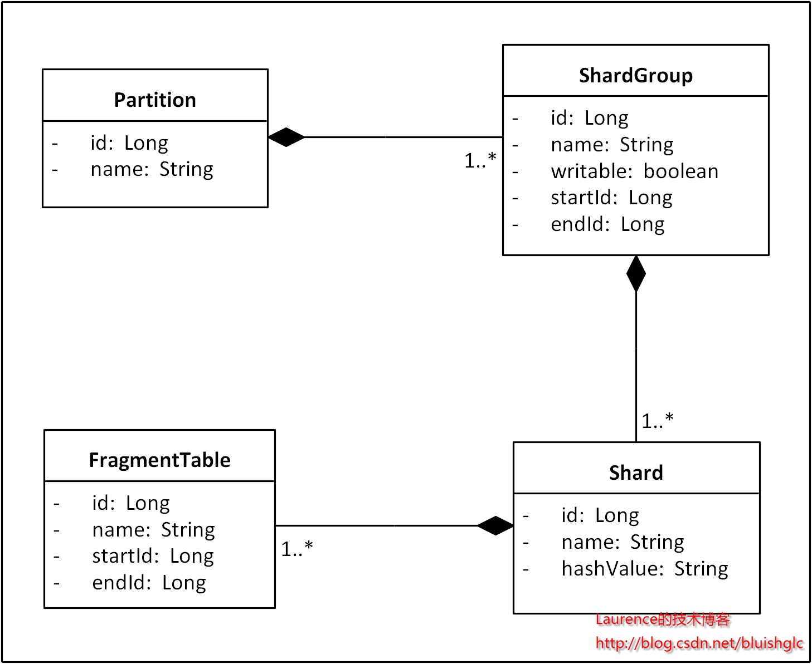
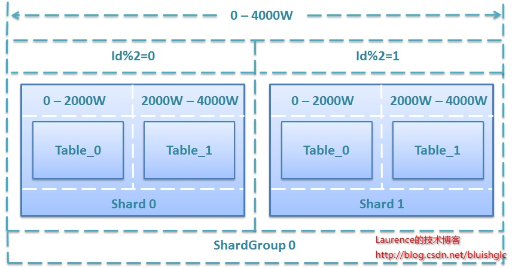
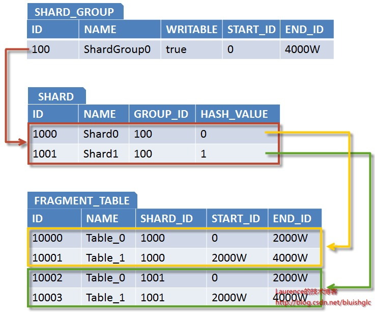
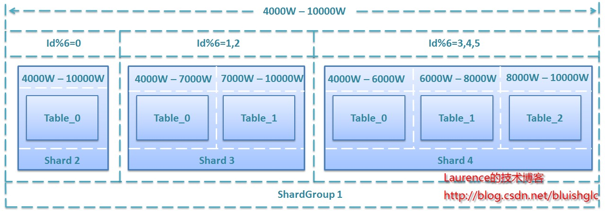
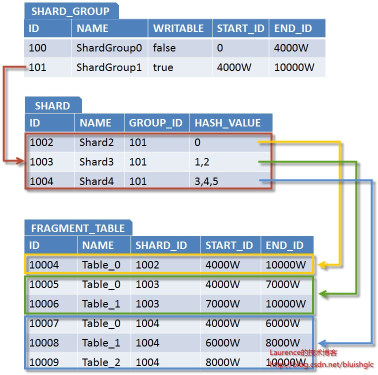
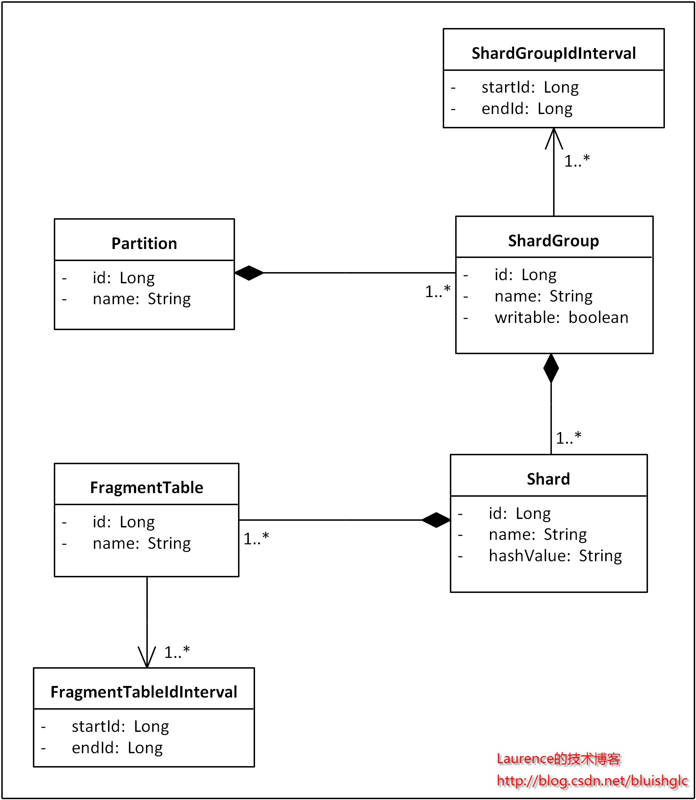
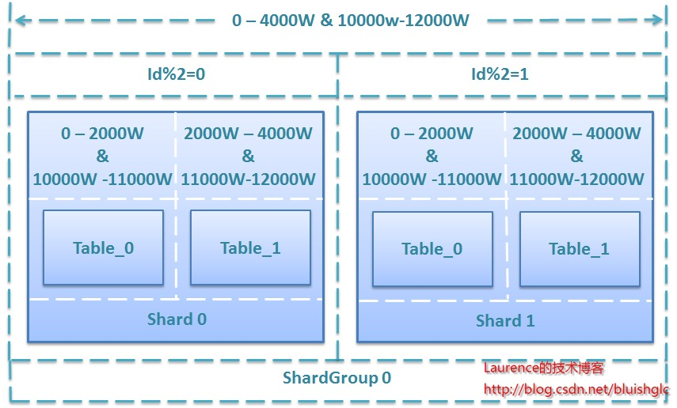
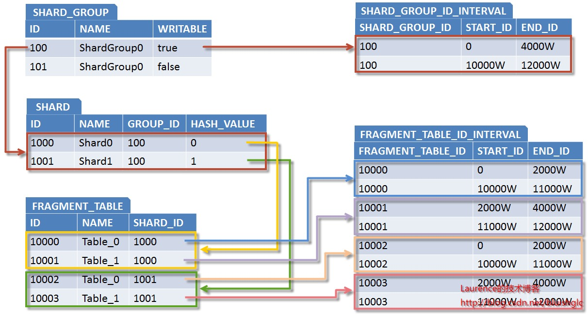

数据库分库分表(sharding)系列(五) 一种支持自由规划无须数据迁移和修改路由代码的Sharding扩容方案
版权声明：本文由本人撰写并发表于2012年9月份的《程序员》杂志，原文题目《一种支持自由规划的Sharding扩容方案——主打无须数据迁移和修改路由代码》，此处作为本系列的第五篇文章进行转载, 本文版权归《程序员》杂志所有，未经许可不得转载！
作为一种数据存储层面上的水平伸缩解决方案，数据库Sharding技术由来已久，很多海量数据系统在其发展演进的历程中都曾经历过分库分表的Sharding改造阶段。简单地说，Sharding就是将原来单一数据库按照一定的规则进行切分，把数据分散到多台物理机（我们称之为Shard)上存储，从而突破单机限制，使系统能以 Scale -Out的方式应对不断上涨的海量数据，但是这种切分对上层应用来说是透明的，多个物理上分布的数据库在逻辑上依然是一个库。实现Sharding需要解决一系列关键的技术问题，这些问题主要包括：切分策略、节点路由、全局主键生成、跨节点排序/分组/表关联、多数据源事务处理和数据库扩容等。关于这些问题可以参考笔者的博客专栏 http://blog.csdn.net/column/details/sharding.html 本文将重点围绕“数据库扩容”进行深入讨论，并提出一种允许自由规划并能避免数据迁移和修改路由代码的Sharding扩容方案。
Sharding扩容——系统维护不能承受之重
任何Sharding系统，在上线运行一段时间后，数据就会积累到当前节点规模所能承载的上限，此时就需要对数据库进行扩容了，也就是增加新的物理结点来分摊数据。如果系统使用的是基于ID进行散列的路由方式，那么团队需要根据新的节点规模重新计算所有数据应处的目标Shard，并将其迁移过去，这对团队来说无疑是一个巨大的维护负担；而如果系统是按增量区间进行路由(如每1千万条数据或是每一个月的数据存放在一个节点上 )，虽然可以避免数据的迁移，却有可能带来“热点”问题，也就是近期系统的读写都集中在最新创建的节点上(很多系统都有此类特点：新生数据的读写频率明显高于旧有数据)，从而影响了系统性能。面对这种两难的处境，Sharding扩容显得异常困难。
一般来说，“理想”的扩容方案应该努力满足以下几个要求：
-
最好不迁移数据 （无论如何，数据迁移都是一个让团队压力山大的问题）
-
允许根据硬件资源自由规划扩容规模和节点存储负载
-
能均匀的分布数据读写，避免“热点”问题
-
保证对已经达到存储上限的节点不再写入数据
目前，能够避免数据迁移的优秀方案并不多，相对可行的有两种，一种是维护一张记录数据ID和目标Shard对应关系的映射表，写入时，数据都写入新扩容的Shard，同时将ID和目标节点写入映射表，读取时，先查映射表，找到目标Shard后再执行查询。该方案简单有效，但是读写数据都需要访问两次数据库，且映射表本身也极易成为性能瓶颈。为此系统不得不引入 分布式 缓存来缓存映射表数据，但是这样也无法避免在写入时访问两次数据库，同时大量映射数据对缓存资源的消耗以及专门为此而引入分布式缓存的代价都是需要权衡的问题。另一种方案来自淘宝综合业务平台团队，它利用对2的倍数取余具有向前兼容的特性（如对4取余得1的数对2取余也是1）来分配数据，避免了行级别的数据迁移，但是依然需要进行表级别的迁移，同时对扩容规模和分表数量都有限制。总得来说，这些方案都不是十分的理想，多多少少都存在一些缺点，这也从一个侧面反映出了Sharding扩容的难度。
取长补短，兼容并包——一种理想的Sharding扩容方案
如前文所述，Sharding扩容与系统采用的路由规则密切相关：基于散列的路由能均匀地分布数据，但却需要数据迁移，同时也无法避免对达到上限的节点不再写入新数据；基于增量区间的路由天然不存在数据迁移和向某一节点无上限写入数据的问题，但却存在“热点”困扰。我们设计方案的初衷就是希望能结合两种路由规则的优势，摒弃各自的劣势，创造出一种接近“理想”状态的扩容方式，而这种方式简单概括起来就是：全局按增量区间分布数据，使用增量扩容，无数据迁移，局部使用散列方式分散数据读写，解决“热点”问题，同时对Sharding拓扑结构进行建模，使用一致的路由算法，扩容时只需追加节点数据，不再修改散列逻辑代码。
原理
首先，作为方案的基石，为了能使系统感知到Shard并基于Shard的分布进行路由计算，我们需要建立一个可以描述Sharding拓扑结构的编程模型。按照一般的切分原则，一个单一的数据库会首先进行垂直切分，垂直切分只是将关系密切的表划分在一起，我们把这样分出的一组表称为一个Partition。 接下来，如果Partition里的表数据量很大且增速迅猛，就再进行水平切分，水平切分会将一张表的数据按增量区间或散列方式分散到多个Shard上存储。在我们的方案里，我们使用增量区间与散列相结合的方式，全局上，数据按增量区间分布，但是每个增量区间并不是按照某个Shard的存储规模划分的，而是根据一组Shard的存储总量来确定的，我们把这样的一组Shard称为一个ShardGroup，局部上，也就是一个ShardGroup内，记录会再按散列方式均匀分布到组内各Shard上。这样，一条数据的路由会先根据其ID所处的区间确定ShardGroup，然后再通过散列命中ShardGroup内的某个目标Shard。在每次扩容时，我们会引入一组新的Shard，组成一个新的ShardGroup，为其分配增量区间并标记为“可写入”，同时将原有ShardGroup标记为“不可写入”，于是新生数据就会写入新的ShardGroup，旧有数据不需要迁移。同时，在ShardGroup内部各Shard之间使用散列方式分布数据读写，进而又避免了“热点”问题。最后，在Shard内部，当单表数据达到一定上限时，表的读写性能就开始大幅下滑，但是整个数据库并没有达到存储和负载的上限，为了充分发挥服务器的性能，我们通常会新建多张结构一样的表，并在新表上继续写入数据，我们把这样的表称为“分段表”（Fragment Table）。不过，引入分段表后所有的SQL在执行前都需要根据ID将其中的表名替换成真正的分段表名，这无疑增加了实现Sharding的难度，如果系统再使用了某种ORM框架，那么替换起来可能会更加困难。目前很多数据库提供一种与分段表类似的“分区”机制，但没有分段表的副作用，团队可以根据系统的实现情况在分段表和分区机制中灵活选择。总之，基于上述切分原理，我们将得到如下Sharding拓扑结构的领域模型：

图1. Sharding拓扑结构领域模型
在这个模型中，有几个细节需要注意：ShardGroup的writable属性用于标识该ShardGroup是否可以写入数据，一个Partition在任何时候只能有一个ShardGroup是可写的，这个ShardGroup往往是最近一次扩容引入的；startId和endId属性用于标识该ShardGroup的ID增量区间；Shard的hashValue属性用于标识该Shard节点接受哪些散列值的数据；FragmentTable的startId和endId是用于标识该分段表储存数据的ID区间。
确立上述模型后，我们需要通过 配置文件 或是在数据库中建立与之对应的表来存储节点元数据，这样，整个存储系统的拓扑结构就可以被持久化起来，系统启动时就能从配置文件或数据库中加载出当前的Sharding拓扑结构进行路由计算了（如果结点规模并不大可以使用配置文件，如果节点规模非常大，需要建立相关表结构存储这些结点元数据。从最新的Oracle发布的《面向大规模可伸缩网站基础设施的MySQL参考架构》白皮书一文的“超大型系统架构参考”章节给出的架构图中我们可以看到一种名为：Shard Catalog的专用服务器，这个其实是保存结点配置信息的数据库），扩容时只需要向对应的文件或表中加入相关的节点信息重启系统即可，不需要修改任何路由逻辑代码。
示例
让我们通过示例来了解这套方案是如何工作的。
阶段一：初始上线
假设某系统初始上线，规划为某表提供4000W条记录的存储能力，若单表存储上限为1000W条，单库存储上限为2000W条，共需2个Shard，每个Shard包含两个分段表，ShardGroup增量区间为0-4000W，按2取余分散到2个Shard上，具体规划方案如下：

图2. 初始4000W存储规模的规划方案
与之相适应，Sharding拓扑结构的元数据如下：

图3. 对应Sharding元数据
阶段二：系统扩容
经过一段时间的运行，当原表总数据逼近4000W条上限时，系统就需要扩容了。为了演示方案的灵活性，我们假设现在有三台服务器Shard2、Shard3、Shard4，其性能和存储能力表现依次为Shard2<Shard3<Shard4，我们安排Shard2储存1000W条记录，Shard3储存2000W条记录，Shard4储存3000W条记录，这样，该表的总存储能力将由扩容前的4000W条提升到10000W条，以下是详细的规划方案：

图4. 二次扩容6000W存储规模的规划方案
相应拓扑结构表数据下：

图5. 对应Sharding元数据
从这个扩容案例中我们可以看出该方案允许根据硬件情况进行灵活规划，对扩容规模和节点数量没有硬性规定，是一种非常自由的扩容方案。
增强
接下来让我们讨论一个高级话题：对“再生”存储空间的利用。对于大多数系统来说，历史数据较为稳定，被更新或是删除的概率并不高，反映到数据库上就是历史Shard的数据量基本保持恒定，但也不排除某些系统其数据有同等的删除概率，甚至是越老的数据被删除的可能性越大，这样反映到数据库上就是历史Shard随着时间的推移，数据量会持续下降，在经历了一段时间后，节点就会腾出很大一部分存储空间，我们把这样的存储空间叫“再生”存储空间，如何有效利用再生存储空间是这些系统在设计扩容方案时需要特别考虑的。回到我们的方案，实际上我们只需要在现有基础上进行一个简单的升级就可以实现对再生存储空间的利用，升级的关键就是将过去ShardGroup和FragmentTable的单一的ID区间提升为多重ID区间。为此我们把ShardGroup和FragmentTable的ID区间属性抽离出来，分别用ShardGroupInterval和FragmentTableIdInterval表示，并和它们保持一对多关系。

图6. 增强后的Sharding拓扑结构领域模型
让我们还是通过一个示例来了解升级后的方案是如何工作的。
阶段三：不扩容，重复利用再生存储空间
假设系统又经过一段时间的运行之后，二次扩容的6000W条存储空间即将耗尽，但是由于系统自身的特点，早期的很多数据被删除，Shard0和Shard1又各自腾出了一半的存储空间，于是ShardGroup0总计有2000W条的存储空间可以重新利用。为此，我们重新将ShardGroup0标记为writable=true，并给它追加一段ID区间：10000W-12000W，进而得到如下规划方案：

图7. 重复利用2000W再生存储空间的规划方案
相应拓扑结构的元数据如下：

图8. 对应Sharding元数据
小结
这套方案综合利用了增量区间和散列两种路由方式的优势，避免了数据迁移和“热点”问题，同时，它对Sharding拓扑结构建模，使用了一致的路由算法，从而避免了扩容时修改路由代码，是一种理想的Sharding扩容方案。
相关阅读：
数据库分库分表(sharding)系列(五) 一种支持自由规划无须数据迁移和修改路由代码的Sharding扩容方案
数据库分库分表(sharding)系列(四) 多数据源的事务处理
数据库分库分表(sharding)系列(三) 关于使用框架还是自主开发以及sharding实现层面的考量
数据库分库分表(sharding)系列(二) 全局主键生成策略
数据库分库分表(sharding)系列(一) 拆分实施策略和示例演示
关于垂直切分Vertical Sharding的粒度
数据库Sharding的基本思想和切分策略
数据库分库分表(sharding)系列(五) 一种支持自由规划无须数据迁移和修改路由代码的Sharding扩容方案
https://laurence.enlightgram.com/database/sharding-series-5-scaling/